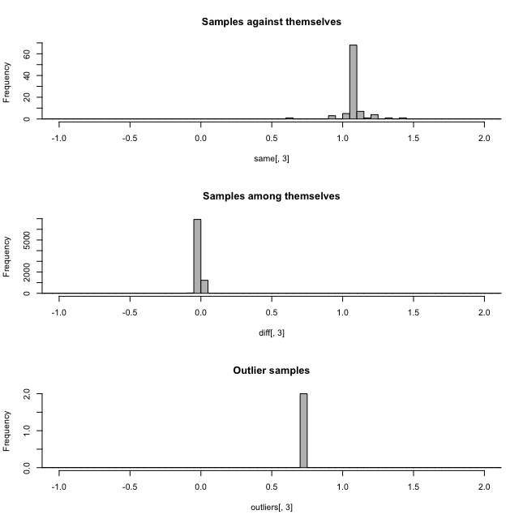
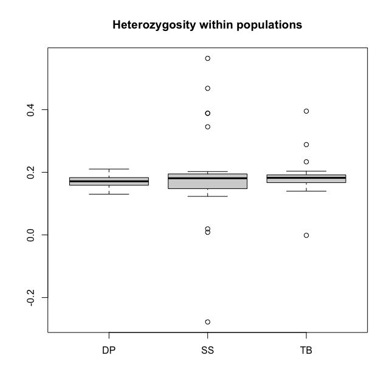
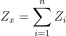
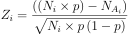
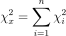
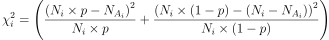
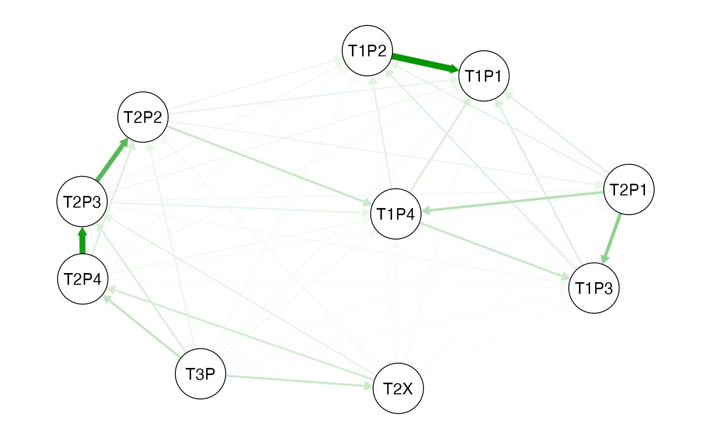

Detecting CNV from SNPs: a quick guide to rCNV
Piyal Karunarathne
Last updated: 16 September, 2024
Source:vignettes/rCNV.Rmd
rCNV.RmdrCNV: An R package for detecting copy number variants from SNPs data
Piyal Karunarathne, Qiujie Zhou, and Pascal Milesi
This tutorial provides a complete guide to detecting CNVs from SNPs data using rCNV package. This includes importing raw VCF files, filtering them, normalization of read depth, categorization of SNPs into “deviants” and “non-deviants”, and from which SNPs located in putative CNV regions are filtered. A brief workflow is presented in Fig 1. below.
All the data used in this tutorial is available either withing the package or from the GitHub repository at https://github.com/piyalkarum/rCNV/tree/master/testDATA.
We provide here a complete workflow of detecting CNVs from SNPs,
starting with raw (unfiltered) VCF as in the number 1 of the workflow
chart. However, if one believes that they have filtered VCFs for the
parameters we highlight (see Fig.1 and sub-sections 1.2 and 1.3), they
can start from the number 2 in the workflow shown above.
NOTE: In the latest iteration of the rCNV package, the
functions sig.hets() and dupGet() use use a
sample based inbreeding coefficient (Fis) to improve the
accuracy of the deviant detection. This Fis is calculated using
the h.zygosity() function; see below for more
information.
# Start by installing the package if you haven't already done so.
# To install the CRAN version
install.packages("rCNV")
# Or if you would like to install the development version of the package
if (!requireNamespace("devtools", quietly = TRUE))
install.packages("devtools")
devtools::install_github("piyalkarum/rCNV", build_vignettes = TRUE)1. PRE-DETECTION
1.1 Importing data
readVCF(). The
imported vcf is stored as a data frame within a list.
library(rCNV)
vcf.file.path <- paste0(path.package("rCNV"), "/example.raw.vcf.gz")
vcf <- readVCF(vcf.file.path,verbose = FALSE)
# This imports an example VCF file included in the package
# The data is a partial dataset of Norway spruce data from Chen et al. 2019.
#print the first 10 rows and columns of the imported VCF
vcf$vcf[1:10,1:10]#> #CHROM POS ID REF ALT QUAL FILTER FORMAT
#> <char> <int> <char> <char> <char> <num> <char> <char>
#> 1: MA_10 24959 . A C 4338.29 PASS GT:AD:DP:GQ:PGT:PID:PL
#> 2: MA_10 26811 . C T 33278.10 PASS GT:AD:DP:GQ:PL
#> 3: MA_10 26860 . A G 273719.00 PASS GT:AD:DP:GQ:PGT:PID:PL
#> 4: MA_10 26874 . T C 374526.00 PASS GT:AD:DP:GQ:PGT:PID:PL
#> 5: MA_31 21911 . C G 2069.06 PASS GT:AD:DP:GQ:PL
#> 6: MA_31 40129 . A T 6549.58 PASS GT:AD:DP:GQ:PL
#> AT_PA_06_12
#> <char>
#> 1: 0/0:7,0:7:21:.:.:0,21,269
#> 2: 0/0:18,0:18:22:0,22,576
#> 3: 0/1:9,5:14:99:0|1:26860_A_G:183,0,775
#> 4: 0/0:15,0:15:3:.:.:0,3,407
#> 5: 0/0:11,0:11:33:0,33,319
#> 6: 0/0:11,0:11:33:0,33,3471.2 Filtering VCF for missing data
get.miss() determines the missing percentages in samples
and SNPs and graphically visualize the missing ranges with 5% quantile
values. We recommend removing samples and SNPs with missing percentages
higher than 50%.The following example demonstrates such filtering on Parrot Fish data from Stockwell et al. (2016).
#download the parrotfish data (Stockwell et al. 2016) file from the following link to your working directory if you do not have the github folder
#https://github.com/piyalkarum/rCNV/blob/master/testDATA/Parrotfish_sequenceReads.vcf.gz
#and specify the path fl= to your file.
fl<-"../testDATA/Parrotfish_sequenceReads.vcf.gz"
parrot<-readVCF(fl,verbose=F)
mss<-get.miss(parrot,verbose = F, plot=F)This generates a list with missing percentage tables for SNPs and
samples and a plot similar to Fig 1.2 where missing percentages are
plotted. Users can also manually plot these percentages on their
discretion. Further, if desired one type of missing percentage (i.e. per
sample or per SNP) can be calculated separately by specifying the
argument type= in the get.miss() function. See
the help page of get.miss() for more information.

head(mss$perSample)
#> indiv n_miss f_miss
#> 1 DP_1 1089 0.05726455
#> 2 DP_10 1086 0.05710680
#> 3 DP_11 1365 0.07177788
#> 4 DP_12 1091 0.05736972
#> 5 DP_13 1069 0.05621286
#> 6 DP_14 387 0.02035021The plot shows that there are several samples with missing data for more than 50% of the SNPs. It is recommended to remove these before proceeding with further analysis. Removing them from the imported vcf file is just a matter of obtaining the columns (samples) for which missing percentage if >50%.
dim(parrot$vcf)
#> [1] 19017 105
sam<-which(mss$perSample$f_miss>0.5)+9 #here we determine the sample columns with f_miss>0.5 and add 9 to get the correct column number because there are 9 more columns before the sample columns start.
parrot<-data.frame(parrot$vcf)[,-sam]
dim(parrot)
#> [1] 19017 100We have removed 5 samples that were undesired for the analysis due to their missing data. Undesired SNPs can also be removed the same way; Note: now they are in rows.
1.3 Assessing the relatedness among samples and heterozygosity within
The function relatedness() in the rCNV package will
generate the relatedness index between pairs of samples according to
Yang et al. (2010). The output is a data frame with pairs of
samples and the relatedness score Ajk. Please read Yang et
al. (2010) for more information on the calculation of
Ajk.
rels<-relatedness(parrot)
head(rels)From the relatedness plots, we can see that the relatedness in Parrot fish samples is low. We recommend removing one sample of the pairs with outlier values above 0.9.

Figure 1.3. a. Relatedness among samples, b. Heterozygosity in Parrotfish populations
Heterozygosity within populations can be calculated using
h.zygosity() function.
pops<-substr(colnames(parrot)[-c(1:9)],1,2) #population codes (the first two letters of the sample names)
hz<-h.zygosity(parrot,pops=pops)
head(hz)In figure 1.3.b, we can see that most of the individuals has a mean heterozygosity FIS close to 0.19, except for a few outliers. However, outliers with an FIS value below -0.2 is highly likely DNA contamination. Therefore, it is recommended to remove such samples.
1.4 Generating allele depth tables and normalized depth values
Allele read depth table is the main data that will be used for the
rest of the analysis. Therefore, having them generated and stored for
later use will immensely save a lot of time. The function
hetTgen() is especially dedicated for this purpose. Apart
from generating filtered allele depth table for separate alleles
(info.type="AD"), the function can also generate total
allele depth (info.type="AD-tot"), genotype table
(info.type="GT"), etc.. See the help page of
hetTgen() for more formats.
ad.tab<-hetTgen(parrot,info.type="AD")
ad.tab[1:10,1:6]| CHROM | POS | ID | ALT | KKOGR07_0005_combo | KKOGR07_0006 | |
|---|---|---|---|---|---|---|
| 7452 | un | 705339 | 67808 | A | 45,0 | 34,0 |
| 18079 | un | 769896 | 80692 | T | 16,0 | 15,0 |
| 9793 | un | 926883 | 109573 | A | 56,0 | 42,0 |
| 11755 | un | 172395 | 16363 | C | 61,67 | 40,34 |
| 10122 | un | 18102 | 1703 | A | 75,0 | 51,0 |
| 816 | un | 76725 | 6991 | C | 66,41 | 20,20 |
As an additional step, rCNV framework corrects allele depth values for genotype misclassifications (where genotype and the depth values do not match) and odd number anomalies (where total depth of a loci is odd).
#the genotype table is needed for correcting the genotype mismatches
gt<-hetTgen(parrot,info.type = "GT")
ad.tab<-ad.correct(ad.tab,gt.table = gt)It is recommended to normalize the allele depth values across samples
in order to avoid the depth variation arise from sequencing
heterogeneity where some samples tend to have higher depth values
compared to others due to different origin of sequencing efforts. We
provide several methods for normalizing data.
| TMM = trimmed mean of M values | MedR = median ratio normalization |
QN = quantile based normalization | pca = PCA based normalization
*Please read the function help for more information on the different methods
#normalize depth table with cpm.normal()
ad.nor<-cpm.normal(ad.tab,method="MedR")
ad.nor[1:6,1:6]Table 1.4.1 Normalized allele depth table
#> OUTLIERS DETECTED
#> Consider removing the samples:
#> KKOGR07_0030 KKOGR07_0043_combo KKOKT10_0069| CHROM | POS | ID | ALT | KKOGR07_0005_combo | KKOGR07_0006 | |
|---|---|---|---|---|---|---|
| 7452 | un | 705339 | 67808 | A | 29,0 | 34,0 |
| 18079 | un | 769896 | 80692 | T | 10,0 | 15,0 |
| 9793 | un | 926883 | 109573 | A | 36,0 | 42,0 |
| 11755 | un | 172395 | 16363 | C | 39,43 | 40,34 |
| 10122 | un | 18102 | 1703 | A | 48,0 | 51,0 |
| 816 | un | 76725 | 6991 | C | 42,26 | 20,20 |
Compare the allele depth values between tables 1.4.0 and 1.4.1.
2. DETECTION
2.1 Generating allele information table
In this step, all the statistics necessary for detecting duplicates are calculated. They include the following: a. Allele ratios (across all samples), b. Proportions of homo-/hetero-zygotes per SNP, c. Depth ratios (alternative/sum), d. Z-score, e. Chi-square significance, and f. excess of heterozygosity
Alternative allele ratio is calculated across all the samples from depth values; Proportion of homo/hetero-zygotes are also calculated across all the samples per SNP; Depth ratio is calculated per individual per SNP by dividing the alternative allele depth value by the total depth value of both alleles. This is calculated for both heterozygotes and homozygotes; the Z-score per SNP is calculated according to the following equation:


Where Ni is the total depth for heterozygote
i at SNP x, NAi is the alternative
allele read depth for heterozygote i at SNP x,
p is the probability of sampling allele A in SNP
x - for unbiased sequencing, this is 0.5. The
allele.info() function calculates this for both
0.5 and biased probability using the ratio between reference
and alternative alleles.
The Chi-squared values per SNP per sample were calculated using the following equation:


Where Ni is the total depth for heterozygote i at SNP x, NAi is the alternative allele read-depth for heterozygote i at SNP x, p is the probability of sampling allele A at SNP x in heterozygotes - in unbiased sequencing, this is 0.5, n is the number of heterozygotes at SNP x.
In addition to the above a-e parameters several other important
statistics per sample per SNP is generated in the
allele.info() output.
# in the new version of the package allele.info() and dupGet() functions require Fis value for a more accurate detection of the deviants
# this is obtained by using the h.zygosity() function as below
hz<-h.zygosity(parrot,verbose = FALSE) #parrot is the filtered vcf file
Fis<-mean(hz$Fis,na.rm = TRUE)
A.info<-allele.info(X=ADtable,x.norm = ADnorm, plot.allele.cov = TRUE,Fis=Fis)
# X is the corrected non-normalized allele depth table and x.norm is the normalized allele depth table
head(A.info)#> CHROM POS ID NHet propHet medRatio NHomRef NHomAlt propHomAlt
#> 7452 un 705339 67808 9 0.08653846 0.5000000 95 0 0.00000000
#> 18079 un 769896 80692 41 0.40594059 0.5000000 48 12 0.11881188
#> 9793 un 926883 109573 54 0.51923077 0.5096539 34 16 0.15384615
#> 10122 un 18102 1703 8 0.07619048 0.5174242 97 0 0.00000000
#> 816 un 76725 6991 49 0.47115385 0.4897959 35 20 0.19230769
#> 17482 un 713297 72437 46 0.43809524 0.5217593 52 7 0.06666667
#> Nsamp pAll pHet fis z.het z.05 z.all
#> 7452 104 0.5514787 0.5154153 0.9899497 0.9816955 0.5373322 0.1694981
#> 18079 101 0.5079704 0.4822855 0.9907917 0.9630120 0.3160515 0.1518454
#> 9793 104 0.5043221 0.4939181 0.9897064 0.6531659 0.8933630 0.5832463
#> 10122 105 0.4610830 0.4917005 0.9900990 0.7954672 0.5758174 0.3945965
#> 816 104 0.5007013 0.5003297 0.9907469 0.6343455 0.6562743 0.6100144
#> 17482 105 0.5085058 0.5166027 0.9897778 0.9822687 0.1245431 0.4469195
#> chi.het chi.05 chi.all z.het.sum z.05.sum z.all.sum
#> 7452 0.9175753 0.9061279 0.8927433 -0.06882976 -1.8505568 4.121455
#> 18079 0.9999231 0.9999047 0.9998801 0.29693961 6.4198038 9.175957
#> 9793 0.9999640 0.9999651 0.9999629 -3.30217028 0.9850626 4.031731
#> 10122 0.7615202 0.7593583 0.7221300 0.73317868 1.5825180 -2.407872
#> 816 0.9995718 0.9995749 0.9995681 3.32933637 3.1154399 3.570371
#> 17482 0.9996000 0.9992832 0.9995143 -0.15073519 -10.4175272 -5.158373
#> chi.het.sum chi.05.sum chi.all.sum eH.pval eH.delta cv
#> 7452 3.251816 3.409112 3.581875 0.6446423 0.3894231 1.0112356
#> 18079 14.588811 14.828298 15.091843 0.4819957 -3.0841584 0.9649802
#> 9793 21.505630 21.466620 21.545469 0.4719765 3.5576923 0.7752089
#> 10122 4.157058 4.175480 4.488264 0.6848750 0.3047619 1.0355910
#> 816 21.872400 21.860947 21.885888 0.7008333 -1.9182692 0.7840350
#> 17482 19.798998 20.702798 20.092246 0.4523861 3.1428571 0.80578382.2 Deviants detection
In this step, the allele information table generated in the previous
step is used to detect deviant SNPs based on different models
(statistics), which then is used in the next step with the appropriate
test statistic to filter putative CNVs. The rCNV function
dupGet() delivers easy to pick model selection to detect
deviant SNPs with a plotting option to visualize the detection.
# Run this code for a demonstration of the detection
# Fis is calculated as before using h.zygosity()
dvs<-dupGet(alleleINF,test = c("z.05","chi.05"),Fis=0.11)
# z score and chi-square values given p=0.05 is used here because the data is RADseq generated and probe-biase is neglegible
head(dvs)The detection of deviant SNPs is based on the
heterozygosity within populations (or among all
samples) and allelic ratios within such heterozygotes.
As such, dupGet() function implements three methods to flag
the deviant alleles; They are a) Excess of heterozygotes, b)
Heterozygous SNPs with depth values that do not follow normal Z-score
distribution, and c) Heterozygous SNPs with depth values that do not
follow normal chi-square distribution.
deviants<-dupGet(alleleINF,Fis=Fis,test = c("z.all","chi.all"),plot=TRUE,verbose = TRUE)
head(deviants)#> CHROM POS ID NHet propHet medRatio NHomRef NHomAlt propHomAlt
#> 7452 un 705339 67808 9 0.08653846 0.5000000 95 0 0.00000000
#> 18079 un 769896 80692 41 0.40594059 0.5000000 48 12 0.11881188
#> 9793 un 926883 109573 54 0.51923077 0.5096539 34 16 0.15384615
#> 10122 un 18102 1703 8 0.07619048 0.5174242 97 0 0.00000000
#> 816 un 76725 6991 49 0.47115385 0.4897959 35 20 0.19230769
#> 17482 un 713297 72437 46 0.43809524 0.5217593 52 7 0.06666667
#> Nsamp eH.pval eH.delta dup.stat
#> 7452 104 0.6446423 0.3894231 non-deviant
#> 18079 101 0.4819957 -3.0841584 non-deviant
#> 9793 104 0.4719765 3.5576923 non-deviant
#> 10122 105 0.6848750 0.3047619 non-deviant
#> 816 104 0.7008333 -1.9182692 non-deviant
#> 17482 105 0.4523861 3.1428571 non-deviantThe function also plots the deviants with Allele median ratio Vs
Proportion of Heterozygotes to visualize and validate the detection by
the user. Users can also plot the detection separately with the output
of dupGet() using dup.plot() function.
2.3 Filtering putative CNVs
SNPs that are located in putative CNV regions are filtered using two
methods; 1) intersection: using a combination of at least two statistics
used in deviant detection. i.e., excess of heterozygotes, Z-score
distribution and Chi-square distribution, 2) K-means: using an
unsupervised clustering based on Z-score, chi-square, excess of
heterozygotes, and coefficient of variation from read-depth dispersion.
The significant SNPs from either of the filtering are
flagged as putative duplicates. The users can pick a range of optimal
statistics
(e.g. z.all,chi.all,z.05,chi.05,
etc.) depending on the nature (also sequencing technology) of the
underlying data. The function cnv() is dedicated for this
purpose.
CV<-cnv(alleleINF, test=c("z.05","chi.05"), filter = "kmeans")
# see the difference between deviants and duplicates
table(deviants$dup.stat)
table(CV$dup.stat)#>
#> deviant non-deviant
#> 335 2522
#>
#> cnv non-cnv
#> 388 24693. POST-DETECTION
3.1 Duplicate list and validation
We test the validity of detected duplicates in two ways: 1. direct detection through a sliding window and 2. variant fixation index
The sliding window method assess the duplication along chromosomes/scaffolds on a given size (e.g., 10,000 bp) sliding window. This step assumes that ideally, if a locus is truly located in a multi-copy region, close-by SNPs should also be classified as deviants while deviation caused by sequencing error should be more scattered along the genome. The putative duplicates that do not follow this assumption will be flagged as low-confident and can be removed if desired. The function
dup.validatein the rCNV package is dedicated to detecting regions enriched for deviant SNPs within a sliding window along a chromosome, scaffold, or a sequence of any given length.
** This method is still under beta-testing **Variant fixation index ( : Redon et al. 2006) is analogous to population fixation index () and calculated as where is the variance of normalized read depths among all individuals from the two populations and VS is the average of the variance within each population, weighed for population size; and used to identify distinct CNV groups between populations (See Dennis et al., 2017; Weir & Cockerham, 1984) The function
vstcan be used to calculate the values per population and plot genetic distance in a network qgraph.
# the dataset used here is from Dorrant et al. 2020 of American lobster populations in Gulf of St. Lawrence, Canada
vdata<-readRDS("../testDATA/lobster_data4Vst.rds")
# get the total depth values of the duplicated snps
# You can either use the following line to get the total depth of the samples or use the "tot" option of the hetTgen function to generate the total depth table
dd<-rCNV:::apply_pb(vdata[,-c(1:4)],2,function(x){do.call(cbind,lapply(x,function(y){sum(as.numeric(unlist(strsplit(as.character(y),","))))}))})
pops<-substr(colnames(dd),1,4)
dd<-data.frame(vdata[,1:4],dd)
Vs<-vst(dd,pops=pops)
Fig. 3.1. Vst network qgraph generated from the Vst values for each
lobster population. Circles represent populations and the green arrows
show similarity and the direction.See qgraph help for the
interpretation of the network analysis.
NOTE: You can also run a permutation test (using
vstPermutation) on the vst calculation to test the
randomness of the vst.
4. References
Chen, J., Li, L., Milesi, P., Jansson, G., Berlin, M., Karlsson, B., … Lascoux, M. (2019). Genomic data provide new insights on the demographic history and the extent of recent material transfers in Norway spruce. Evolutionary Applications, 12(8), 1539–1551. doi: 10.1111/eva.12801
Dorant, Y., Cayuela, H., Wellband, K., Laporte, M., Rougemont, Q., Mérot, C., … Bernatchez, L. (2020). Copy number variants outperform SNPs to reveal genotype–temperature association in a marine species. Molecular Ecology, 29(24), 4765–4782. doi: 10.1111/mec.15565
Karunarathne P, Zhou Q, Schliep K, Milesi P. A comprehensive framework for detecting copy number variants from single nucleotide polymorphism data: ‘rCNV’, a versatile r package for paralogue and CNV detection. Mol Ecol Resour. 2023 Jul 29. doi: 10.1111/1755-0998.13843
Karunarathne, P., Zhou, Q., Schliep, K., & Milesi, P. (2022). A new framework for detecting copy number variants from single nucleotide polymorphism data: ‘rCNV’, a versatile R package for paralogs and CNVs detection. BioRxiv, 2022.10.14.512217. doi: 10.1101/2022.10.14.512217
Redon, R., Ishikawa, S., Fitch, K. R., Feuk, L., Perry, G. H., Andrews, T. D., … Chen, W. (2006). Global variation in copy number in the human genome. Nature, 444(7118), 444–454.
Stockwell, B. L., Larson, W. A., Waples, R. K., Abesamis, R. A., Seeb, L. W., & Carpenter, K. E. (2016). The application of genomics to inform conservation of a functionally important reef fish (Scarus niger) in the Philippines. Conservation Genetics, 17(1), 239–249
Yang, J., Benyamin, B., McEvoy, B. P., Gordon, S., Henders, A. K., Nyholt, D. R., … Visscher, P. M. (2010). Common SNPs explain a large proportion of the heritability for human height. Nature Genetics, 42(7), 565–569. doi: 10.1038/ng.608